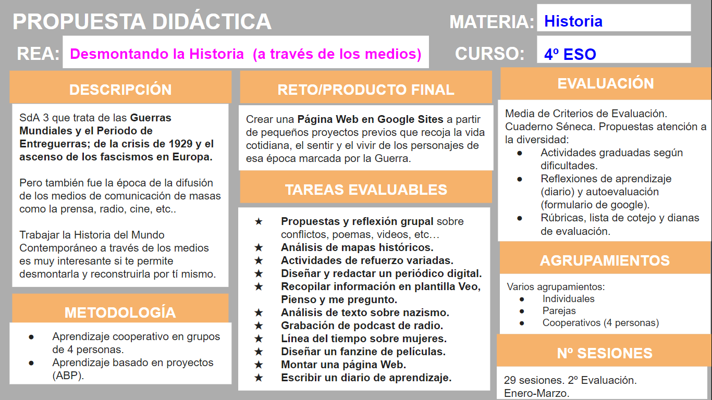

PROPUESTA DIDÁCTICA
Este proyecto se llama "Desmontando la Historia (a través de los medios)" y forma parte de mi SdA 3 que trata de las Guerras Mundiales y el Periodo de Entreguerras, acontecimientos que cambiaron el ritmo del mundo y en el que aparecieron medios de comunicación como la prensa, la radio, la televisión, el cine y posteriormente la era digital en la que nos encontramos actualmente. Nos brinda la oportunidad de abrir nuevas ventanas y de trabajar con estas fuentes para entender unos hechos tan complejos que les permita reflexionar de forma crítica y autónoma sobre la condena de la guerra y el fomento de una cultura de la cooperación mundial y la paz global.
La propuesta está diseñada para las materia de Historia de 4º de ESO, pero puede ser aplicable también para Historia del Mundo Contemporáneo de 1º de Bachillerato, ya que los contenidos son similares.
Aquí detallo más información sobre la SdA 3 que he desarrollado en el genially:
https://view.genial.ly/6589dcdb8093b10014c80922
Y aquí se detalla un padlet del producto final:
https://padlet.com/aruidam294/proyecto-final-qazo4inc75t1zmo2

En este enlace Propuesta didáctica se puede descargar para editar.
Los contenidos que se trabajan en la propuesta didáctica son:
a.- Primera Guerra Mundial y Revolución Rusa
b.- Periodo de Entreguerras: crisis de 1929 y totalitarismos.
c.- Segunda Guerra Mundial.
Las fuentes históricas de búsqueda y análisis de la Historia son:
a.- Prensa escrita.
b.- Radio.
c.- Cine.
d.- Recursos en red: enlaces a material histórico.
La estructura de la SdA se corresponde con contenido-fuente histórica:
a.- Comienza con actividades de motivación-reflexión-conflicto y no violencia.
b.- Varios bloques de contenidos explicativos teóricos como "Conociendo la I GM y la Revolución Rusa", "Exploro el Periodo de Entreguerras" y "Vuelve el conflicto ... II Guerra Mundial". Contiene presentaciones, análisis de mapas, textos y actividades variadas.
c.- Los bloques basados en el trabajo con fuentes históricas y proyectos que darán lugar al proyecto final como son "Construyendo noticias de guerras" (prensa), "Grabando al son de los `felices años 20´" (radio) y "Testigos de una época" (cine). Relacionados con los ABP de hacer un periódico en genially, un podcast en ivoox y un fanzine en papel.
d.- Y el proyecto final recopilatorio "Y por fin, ¡Monto mi historia!" que amalgama todo lo anterior en un Google Sites para compartir con otras personas de su entorno. Esta última parte, adquiere notoriedad por la construcción de la Historia más personal basada en una indagación que sin saberlo han ido realizando.